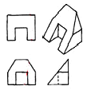
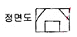
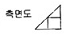
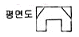
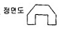

자동차차체수리기능사 (2007-09-16 기출문제)
1과목: 자동차공학
1. 전기 용접시 용접부의 결함이 아닌 것은?
- 오버랩
- 언더컷
- 슬래그
- 피복
(정답률: 84%)

2. 다음 중 일반적인 프레임의 종류가 아닌 것은?
- X형 프레임
- 회전(rotary)형 프레임
- 페리미터(perimeter)형 프레임
- 플렛폼(platform)형 프레임
(정답률: 89%)
3. 자동차 현가장치에서 쇽업쇼버와 가장 관계가 깊은 힘은?
- 감쇄력
- 원심력
- 구동력
- 전단력
(정답률: 88%)
4. 자동차의 차체 모양에 다른 분류로 외관은 세단과 같으나 운전석과 객석 사이에 칸막이를 설치하고 보조좌석을 설치한 7-8인승의 고급 차량은?
- 리무진
- 쿠페
- 컨버터블
- 웨건
(정답률: 95%)
5. 다음 중 온도의 단위인 섭씨온도를 나타낸 기호는?
- ‘c
- ‘R
- 'K
- 'F
(정답률: 94%)
6. 차체 측면부에서 가장 큰 강성이 요구되는 부분은?
- 후드
- 패널
- 필러
- 트렁크
(정답률: 78%)
7. 전기회로에서 옴의 법칙을 틀리게 설명한 것은?
- 저항이 일정할 때 전압이 증가되면 전류감도 증가된다.
- 전류가 일정할 때 저항이 증가되면 전압도 증가된다.
- 전압과 저항이 증가되면 전류도 증가된다.
- 전류와 저항이 증가되면 전압도 증가된다.
(정답률: 53%)
8. 자동차에서는 실린더 내에서 연소를 하고 남은 배기가스를 밖으로 내보내는 가스의 운동을 하게 된다 이런 경우 배기가스에 배압이 상승한다면 그 이유로 가장 적합한 것은?
- 배기관의 막힘
- 오버사이즈 소음기
- 2개로 설치된 테일 파이프
- 새로 장착한 정품의 머플러
(정답률: 92%)
9. 다음 중 타이어 편마모 원인이 아닌 것은?
- 공기압 부족 또는 과다
- 휠 밸런스 불량
- 토인 불량
- 디스크 런아웃 불량
(정답률: 72%)
10. 물질에서 기체, 액체, 고체의 3상이 공존하는 상태를 무엇이라 하는가?
- 임계점
- 3중점
- 포화한계선
- 액화점
(정답률: 93%)
11. 산소 아세틸렌 용접에서 플럭스가 하는 작용은?
- 균열방지
- 열확산 방지
- 산화 방지
- 과열 방지
(정답률: 57%)
12. 철강재료 중에 탄소강은 탄소를 몇 % 정도 함유한 것인가?
- 0.035 ~ 1.7
- 1.7 ~ 6.67
- 1.7 ~ 4.3
- 0.035 이하
(정답률: 81%)
13. 다음 보기와 같은 투상도를 보고 틀린 부분을 바르게 수정한 것은?





(정답률: 72%)
14. 금속 판재를 냉간 가공하면 결정입자는 어떤 조직으로 되는가?
- 입상조직
- 섬유조직
- 편상조직
- 층상조직
(정답률: 66%)
15. 스케치에 의해 제작도를 완성할 때 제일 끝에 그리는 것은?
- 부품 조립도
- 부품도
- 전체 조립도
- 배치도
(정답률: 70%)
16. 아세틸렌과 산소를 1:1로 혼합 공급하여 연소시킬때의 온도는?
- 약 1000℃
- 약 2000℃
- 약 3200℃
- 약 4000℃
(정답률: 58%)
17. 다음 질화법에 관한 설명 중 틀린 것은?
- 질화법에 대한 화학 방정식은 NH3 = N + 3H 이다.
- 질화강의 탄소 함유량은 0.25 ~ 0.4% 이다.
- 질화층의 경도를 높이기 위하여 첨가되는 원소는 AI, Cr, Mo 등이 있다.
- 질화법은 재료의 중심부의 경화에 그 목적이 있다.
(정답률: 61%)
18. 티그 용접의 설명으로 맞지 않는 것은?
- 산화 토륨을 1~2% 첨가한 것은 전자 방출이 있다.
- 역극성에 사용되는 전극봉 지름이 정극성에 사용되는 용접봉 지름보다 크다.
- 정극성의 경우 전극봉 끝은 원뿔형태로 가공한다.
- 전극봉의 원뿔각도가 작으면 용입은 감소한다.
(정답률: 52%)
19. 용접 지그의 사용목적이 아닌 것은?
- 가능한 한 아래보기 자세로 할 수 있게 한다.
- 용접시 발생되는 변형방지와 역변형을 주어 정밀도를 향상시킨다.
- 대량 생산시 조립작업을 단순화 자동화롤 능률을 향상시킨다.
- 재료의 절약 및 작업자의 안전을 확보한다.
(정답률: 47%)
20. 납의 성질을 잘못 설명한 것은?
- 전성이 크고 연하다.
- 인체에 유독한 금속이다.
- 공기나 물에는 거의 부식 되지 않는다.
- 내알카리성이다.
(정답률: 81%)
2과목: 자동차차체정비
21. 알루미늄 합금 중에서 열팽창계수가 가장 작은 것은?
- 실루민
- 듀랄루민
- Y 합금
- 로우엑스
(정답률: 74%)
22. 연삭숫돌의 입도는 무엇으로 표시하나?
- 번호
- 밀도
- 알파벳
- 결합력
(정답률: 65%)
23. 용접전압의 설명으로 맞지 않는 것은?
- 아크 길이를 결정하는 변수이다.
- 적정 아크 길이는 심선 지름과 대략 같은 정도가 좋다.
- 아크 길이가 길면 용융금속의 산화 질화가 쉽다.
- 철분계 용접봉은 아크 길이 조정이 필요하다.
(정답률: 52%)
24. 점용접에서 접합면의 일부가 녹아 바둑알 모양의 단면으로 된 부분을 무엇이라 하는가?
- 스폿
- 너겟
- 포일
- 돌기
(정답률: 78%)
25. 일반적인 금속의 특징 중 맞지 않는 것은?
- 최저 용융 온도의 금속은 Hg(-38.4'c), 최고 용융온도는 W(3410'c) 이다.
- 최소의 비중은 Li(0.53) 최대 비중은 Ir(22.5) 이다.
- 일반적으로 용융 온도가 높으면 금속의 비중이 크다.
- 내열성과 경량성을 동시에 만족하는 재료를 얻기 쉽다.
(정답률: 84%)
26. 새 부품(신 패널)의 준비에서 패널의 절단에 대한 설명 중 맞지 않는 것은?
- 차체 측의 절단면은 용접선을 최소화 되게 한다.
- 겹치는 부분을 충분히 넓게 해서 조립시 휘치 확인이 용이하게 한다.
- 새 부품이 변형되지 않게 무리한 힘을 주지 않는다.
- 절단은 쇠톱이나 에어톱을 사용한다.
(정답률: 85%)
27. 승용차의 앞면 중앙부에 외력이 가해졌을 경우 점검해야 할 부분이다. 가장 거리가 먼 것은?
- 라디에이터 코어 서포트와 좌우 후드 레지패널 부근의 점검
- 좌우 후드 레지 패널은 안쪽(엔진룸 쪽)으로 글리는 경향이므로 그 부분의 변형 유무점검
- 프론트 크로스 멤버와 좌우 사이드 멤버가 붙어있는 부근의 점검
- 뒤 트렁크 부분의 점검
(정답률: 87%)
28. 다음 중 차체 정비에 사용되는 동력 공구가 아닌 것은?
- 판금 샌더
- 판금 스포트 제거 드릴
- 파워 치즐
- 판금 슬라이딩 해머
(정답률: 52%)
29. 리어 범퍼 탈착 작업 중 맞지 않는 것은?
- 화물실 리어 트림 및 콤비네이션 램프 탈거
- 리어 범퍼 로워 마운팅 리테이너 탈거
- 리어 범커 엎어 마운팅 스크류 및 리테이너 탈거
- 센터 필러 트림 탈거
(정답률: 86%)
30. 페인트 표면에 대한 적외선 흡수율이 가장 높은 색깔은?
- 노랑색
- 검정색
- 흰색
- 적갈색
(정답률: 88%)
31. 프레임 기준선에 의 하여 데이텀 라인 게이지로 변형 상태를 점검할 때 주의할 사항이 아닌 것은?
- 보디 치수도를 활용 할 것
- 계측기기의 손상이 없을 것
- 차체를 회전시키면서 점검할 것
- 수평으로 확실하게 고정할 것
(정답률: 92%)
32. 색상 광택 부드러움과 외관 향상을 위해 최종적으로 도장 되는 도료는?
- 프라이머
- 퍼티
- 서페이서
- 탑코트
(정답률: 78%)
33. 자동차 보수도장에 있어서 도료의 건조장치 중 가장 바람직한 것은?
- 복사 대류에 의한 열풍 건조장치
- 복사에 의한 고온 다습한 열풍 건조장치
- 습도가 많은 상온에서의 자연 건조장치
- 고온 다습한 실내에서의 자연 건조장치
(정답률: 88%)
34. 트램 트랙킹 게이지로 네 바퀴의 정열을 점검할 수 있는 종류에 들지 않는 것은?
- 우측 프론트 서스펜션의 굽음
- 토인과 캠버의 변화
- 리어 액슬의 흔들림
- 옆으로 굽은 프레임의 앞 부위
(정답률: 75%)
35. 자체수리용 판금 잭의 기능 중 가장 적당한 것은?
- 밀고 절단한다.
- 당기고 절단한다.
- 밀고, 당기고, 절단한다.
- 밀고, 당기고, 오무린다.
(정답률: 72%)
36. 다음 중 소재의 두께를 변화 시키지 않고 성형하는 압축가공의 종류는 무엇인가?
- 엠보싱
- 플랜징
- 컬링
- 드로잉
(정답률: 39%)
37. 그림은 패널의 어떤 가공법인가?
- 펀칭가공
- 절단가공
- 해밍가공
- 플랜지 가공
(정답률: 52%)
38. 수평바의 높낮이를 비교 측정하여 언더보디의 상하변형을 판독하는 것은?
- 센터라인
- 레벨
- 데이텀
- 치수
(정답률: 56%)
39. 자동차의 도어 부품으로 맞지 않는 것은?
- 스트라이커
- 도어체커
- 도어 로크
- 도어 인사이드 핸들 및 노브
(정답률: 80%)
40. 다음 판금 퍼티작업 방법으로 가장 옳은 것은?
- 한번에 쌓아 올리는 높이는 5mm 정도가 적당하다.
- 혼합용 정반이 없다면 판자 조각이나 두꺼운 종이를 써도 무방하다.
- 한번에 쌓아 올리는 양 만큼씩 사용하는 것보다 많은 양을 혼합해서 두고 쓰는 것이 좋다.
- 공기의 거품이 남아 있다면 도막 파열의 원인이 되므로 제거한다.
(정답률: 81%)
3과목: 안전관리
41. 파손된 강판을 분해한 다음 제 1단계 작업을 시행하게 된다. 이때 어떤 작업을 행하는가?
- 범핑작업
- 절단작업
- 연삭작업
- 러핑작업
(정답률: 49%)
42. 차체 치수도의 표시법에서 기준점에 해당되지 않는 것은?
- 홀의 기준점
- 계단부의 기준점
- 2중 겹침 패널의 기준점
- 부품 중앙부의 기준점
(정답률: 57%)
43. 색의 3속성에 해당 되지 않는 것은?
- 광원
- 색상
- 명도
- 채도
(정답률: 83%)
44. 보디 프레임을 점검할 때 정확한 측정기기는 어느 것인가?
- 하이트 게이지
- 토인바아 게이지
- 트램 트랙킹 게이지
- 버어니어 캘리퍼스
(정답률: 85%)
45. 판금 가공용 재료의 구비조건이 될 수 없는 것은?
- 전연성이 풍부할 것
- 탄성이 풍부할 것
- 항복점이 낮을 것
- 소성이 풍부할 것
(정답률: 59%)
46. 다음 중 굽힘 작업의 범위에 속하지 않는 것은?
- 시밍
- 블랭킹
- 폴딩
- 꺽어굽힘
(정답률: 57%)
47. 차체 기계적인 접합 방법의 장점인 것은?
- 작업하기 어렵다.
- 용접기가 필요하다.
- 접합강도는 떨어진다.
- 몇 번이고 반복이 가능하다.
(정답률: 92%)
48. 프레임의 한쪽 사이드멤버를 단순한 빔으로 생각할 경우 사이드멤버와 휠베이스 사이에서는 사이드멤버 아래쪽은 잡아 당겨지고, 위쪽은 압축력이 작용하게 된다. 그 결과는 어떻게 되는가?
- 아래쪽 - 만곡, 위 부분 - 균열
- 아래쪽 - 균열, 위 부분 - 만곡
- 아래쪽 - 절손, 위 부분 - 균열
- 아래쪽 - 만곡, 위 부분 - 절손
(정답률: 68%)
49. 상도 도장 후 광택내기 작업을 할 때 사용하는 것은?
- 리무버
- 컴파운드
- 크실렌
- 스테인
(정답률: 79%)
50. 2개의 사이드멤버에 여러개의 크로스 멤버, 보강판, 서스펜션 범퍼 등의 설치용 브래킷류를 볼트나 아크용접으로 결합하여 사다리 모양으로 제작한 프레임은 무엇인가?
- H형 프레임
- X형 프레임
- 백본형 프레임
- 트러스트형 프레임
(정답률: 87%)
51. 줄을 사용할 때의 주의사항들이다. 안전에 어긋나는 점은?
- 줄 작업의 높이는 작업자의 팔꿈치 높이로 하거나 조금 낮춘다.
- 작업자세는 허리를 낮추고, 전신을 이용할 수 있게한다.
- 절삭가루가 많이 쌓일 때는 불어가면 작업한다.
- 줄을 잡을 때는 한손으로 줄을 확실히 잡고, 다른 한손으로 끝을 가볍게 쥐고 앞으로 가볍게 민다.
(정답률: 83%)
52. 소화작업시 적당하지 않는 것은?
- 화재가 일어나면 먼저 인명구조를 해야 한다.
- 전기배선이 잇는 곳을 소화 할 때는 전기가 흐르는지 먼저 확인해야 한다.
- 가스 밸브를 잠그고 전기 스위치를 끈다.
- 카바이트 및 유류에는 물을 끼얹는다.
(정답률: 95%)
53. 방독마스크를 착용하지 않아도 되는 곳은?
- 일산화탄소 발생 장소
- 아황산가스 발생 장소
- 암모니아 발생 장소
- 산소 발생 장소
(정답률: 93%)
54. 드릴로 큰 구멍을 뚫으려고 할 때에 먼저 할 일은?
- 금속을 무르게 한다.
- 작은 구멍을 뚫는다.
- 스핀들의 속도를 빠르게 한다.
- 드릴 커팅 앵글을 증가 시킨다.
(정답률: 91%)
55. 다이얼 게이지 사용시 유의사항을 설명하였다. 틀린 것은?
- 스핀들에 주유하거나 그리스를 발라서 보관하는 것이 좋다.
- 분해 청소나 조정을 함부로 하지 않는다.
- 게이지에 어떤 충격도 가해서는 안 된다.
- 게이지를 설치할 때에는 지지대의 팔을 될 수 있는 대로 짧게 하고 확실하게 고정해야한다.
(정답률: 86%)
56. 리어 사이드 맴버의 부분 잘라 잇기 작업 시 절단이음부 설정을 위한 재단 작업 시 안전사항이다. 적합하지 않은 것은?
- 종이테이프를 이용하여 절단 선을 설정, 재단하는 것이 안전하다.
- 연성이 풍부한 비닐 테이프를 이용하여 절단 선을 설정 재단하는 것이 안전하다.
- 두꺼운 청테이프를 이용하여 절단 선을 설정, 재단하는 것이 안전하다.
- 탈거한 폐자재의 홀(구멍)을 이용하여 절단 선을 설정, 재단하는 것이 안전하다.
(정답률: 62%)
57. 보호구의 종류에는 안전과 위생 보호구가 있다. 이중 안전 보호구가 아닌 것은?
- 안전모
- 안전화
- 안전대
- 마스크
(정답률: 83%)
58. 용접의 가스 분출구에 묻은 카본을 제거할 때 다음 중에서 가장 적당한 것은?
- 동선이나 놋쇠선
- 줄
- 철선이나 동선
- 시멘트 바닥
(정답률: 68%)
59. 자동차의 파워 스티어링 오일에 관한 설명으로 틀린 것은?
- 파워 스티어링 오일 점검은 시동을 끈 상태에서 실시한다.
- 파워 스티어링 오일 부족은 핸들을 무겁게 한다.
- 파워 스티어링 오일은 규정된 오일을 사용하여야한다.
- 파워 스티어링 오일 보충은 최대선에 가깝게 보충한다.
(정답률: 59%)
60. 차체수리 작업장의 환기법 종류가 아닌 것은?
- 자연 환기법
- 부분 환기법
- 국부 환기법
- 전체 환기법
(정답률: 46%)